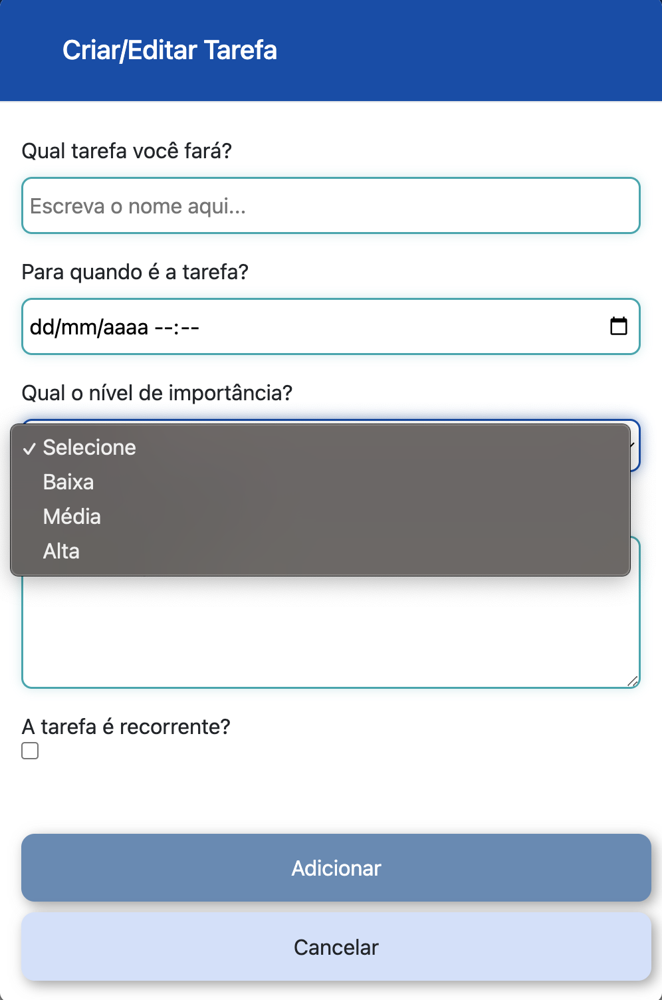

Introdução
Informações básicas do projeto como nome e membros da equipe.
Informações Gerais
- Projeto: Gestão do Tempo
- Repositório GitHub: Template Trabalho Interdisciplinar
- Membros da equipe:
Contexto
Detalhes sobre o espaço de problema, justificativas e os objetivos do projeto.
Problema
O tema central de nosso projeto é a gestão ineficiente do tempo, um desafio comum enfrentado por muitas pessoas. Isso frequentemente ocorre devido à dificuldade de organizar tarefas, compromissos e momentos de lazer, sejam eles regulares ou esporádicos, de forma a serem realizados no prazo estabelecido. Além disso, distrações, procrastinação e imprevistos frequentemente atrapalham essa gestão.
Objetivos
Nosso principal objetivo é desenvolver uma aplicação web que auxilie os usuários a gerirem seu tempo de maneira mais eficaz, permitindo um maior controle sobre suas atividades diárias. Almejamos também que nosso software seja intuitivo, dinâmico e de fácil utilização, tornando-o atrativo para uso contínuo. Além disso, buscamos oferecer uma alta personalização na aplicação, permitindo que os usuários a adaptem às suas preferências e necessidades individuais.
Justificativa
O grupo conduziu entrevistas qualitativas com universitários da PUC Minas (Coração Eucarístico), da UFMG e de algumas outras universidades para investigar o uso de ferramentas de gerenciamento de tempo ou tarefas. Durante as entrevistas, verificou-se que a maioria dos participantes tinha interesse em adotar uma ferramenta desse tipo. No entanto, constatou-se que as ferramentas previamente testadas eram pouco intuitivas ou excessivamente complexas. Diante desse feedback, ao analisar outras opções no mercado, buscamos identificar aplicações mais relevantes e que melhor atendessem às necessidades do público-alvo do nosso trabalho.
Público-alvo
Embora nossa aplicação possa beneficiar uma ampla gama de pessoas, optamos por direcioná-la principalmente a estudantes universitários,
jovens adultos com idades entre 17 e 35 anos. Esse público enfrenta desafios significativos na gestão do tempo, seja devido à dificuldade de
distribuir suas tarefas em um período limitado, à procrastinação, às distrações (como jogos e redes sociais) ou à dificuldade de conciliar
trabalho e estudos, conforme evidenciado nas entrevistas.
Nosso público-alvo, em sua maioria, pertence à classe média e é diversificado em termos de gênero, sendo aberto tanto para o público feminino
quanto para o masculino. Além disso, esses jovens adultos têm hábitos variados, incluindo sair com amigos aos finais de semana,
praticar esportes, frequentar academias e se envolver em jogos online. Portanto, entendemos que essas atividades fazem parte de suas vidas
cotidianas, e nossa aplicação foi projetada para se integrar harmoniosamente a esses estilos de vida dinâmicos, ajudando-os a equilibrar seus
compromissos e aproveitar ao máximo seu tempo. A familiaridade desse público com a tecnologia também facilita a integração de nossa
aplicação web em sua rotina diária.
Concepção (Design Thinking)
Detalhes do processo de discovery do projeto.
Apresente o processo de discovery do projeto. Com foco na experiência do usuário, esse processo abrange a compreensão do contexto do problema e das características do usuário, a definição do problema, a geração de ideias, a prototipagem e a elaboração de uma proposta de solução
Processo de Design Thinking
O arquivo que se segue apresenta o resultado desse processo.
Apresente o processo de Design Thinking realizado pelo grupo e documentado por meio do software Miro. No documento apresentado, devem ser incluídos: (1) a matriz CSD, (2) o mapa de stakeholders, (3) as personas, (4) as respectivas propostas de valor e (5) o processo de ideação identificando as ideias levantadas e sua priorização.
Especificações do Projeto
Documentação das especificações do projeto.
Apresente as especificações do projeto, incluindo as histórias de usuário e os requisitos funcionais e não funcionais.
Histórias de Usuários
Com base na análise das personas foram identificadas as seguintes histórias de usuários:
Apresente aqui as histórias de usuário que são relevantes para o projeto de sua solução. As Histórias de Usuário consistem em uma ferramenta poderosa para a compreensão e elicitação dos requisitos funcionais e não funcionais da sua aplicação. Se possível, agrupe as histórias de usuário por contexto, para facilitar consultas recorrentes à essa parte do documento.
EU COMO...PERSONA |
QUERO/PRECISO...FUNCIONALIDADE |
PARA...MOTIVO/VALOR |
|---|---|---|
| Alice | Cadastrar minhas tarefas e eventos | Ter controle de meus afazeres |
| Leonardo | Ter fácil visualização de minhas tarefas e compromissos | Melhor organização |
| Alice | Receber alertas sobre minhas tarefas a vencer | Não esquecer de fazê-las |
| Leonardo | Ver minhas tarefas por ordem de Prioridade | Decidir o que exige mais foco no momento |
| Alice | Rastrear o tempo gasto em cada tarefa | Ter controle dos meus horários |
| Alice | Ferramentas de personalização | Adaptar melhor a ferramenta as minhas tarefas e rotinas |
| Leonardo | Ter acesso a relatórios | Acompanhar o progesso da minha performance |
| Leonardo | Uma ferramenta simples e intuitiva | Aprender a utilizá-la rapidamente |
| Alice | Conseguir separar minhas tarefas por cores | Personalizar da maneira que me agrade visualmente |
| Leonardo | Distribuir tarefas de maneira simplificada | Ter mais tempo para iniciar a academia |
Requisitos
As tabelas que se seguem apresentam os requisitos funcionais e não funcionais que detalham o escopo do projeto.
Com base nas Histórias de Usuário, enumere os requisitos da sua solução. Classifique esses requisitos em dois grupos:
- Requisitos Funcionais (RF): correspondem a uma funcionalidade que deve estar presente na plataforma (ex: cadastro de usuário).
- Requisitos Não Funcionais (RNF): correspondem a uma característica técnica, seja de usabilidade, desempenho, confiabilidade, segurança ou outro (ex: suporte a dispositivos iOS e Android).
Lembre-se que cada requisito deve corresponder à uma e somente uma característica alvo da sua solução. Além disso, certifique-se de que todos os aspectos capturados nas Histórias de Usuário foram cobertos.
Requisitos Funcionais
| ID | Descrição do Requisito | Prioridade |
|---|---|---|
| RF-001 | Permitir que o usuário cadastre, edite e exclua tarefas. | ALTA |
| RF-002 | Permitir que o usuário marque suas atividades como concluídas. | ALTA |
| RF-003 | Permitir que o usuário visualize suas tarefas por prazo de forma involuntária. | MÉDIA |
| RF-004 | Permitir que o usuário defina a prioridade de suas tarefas. | ALTA |
| RF-005 | Permitir que o usuário visualize suas tarefas pelo nível de prioridade de forma involuntária. | ALTA |
| RF-006 | Calendário com vinculação de tarefas (agenda) | ALTA |
| RF-007 | Gráfico de visão geral de desempenho (Tarefas Concluídas) | BAIXA |
| RF-008 | Histórico de Tarefas Concluídas | ALTA |
| RF-009 | Cartões explicativos sobre métodos de estudos | BAIXA |
| RF-010 | Permitir que o usuário visualize suas informações pessoais de login. | BAIXA |
Requisitos Não-Funcionais
| ID | Descrição do Requisito | Prioridade |
|---|---|---|
| RNF-001 | O sistema deve ser responsivo para rodar em um dispositivos móvel | ALTA |
| RNF-002 | Carregamento inicial rápido | MEDIA |
| RNF-003 | Baixo tempo de resposta | MEDIA |
| RNF-004 | Baixo consumo de internet | BAIXA |
Projeto de Interface
Artefatos relacionados com a interface e a interacão do usuário na proposta de solução.
Apresente a ideia de interface que está sendo prevista para o projeto. Inclua os wireframes, o user/screen flow e o protótipo interativo.
User/Screen Flow e Protótipo interativo
Artefatos relacionados com a interface e a interacão do usuário na solução proposta.
O fluxo de usuário (User Flow) é uma técnica que permite ao desenvolvedor mapear todo fluxo de telas do site ou app. Essa técnica funciona para alinhar os caminhos e as possíveis ações que o usuário pode fazer junto com os membros de sua equipe. 
Um protótipo interativo apresenta o projeto de interfaces e permite ao usuário navegar pelas funcionalidades como se estivesse lidando com o software pronto. Veja o exemplo a seguir.
User Flow
 Protótipo Interativo
Protótipo Interativo
Wireframes
Protótipo de telas do sistema em baixa fidelidade (rascunhos).
Os Wireframes são protótipos das telas da aplicação usados em design de interface para sugerir a estrutura de um site web e seu relacionamentos entre suas páginas. Um wireframe web é uma ilustração semelhante ao layout de elementos fundamentais na interface. 
Tela 1: Tela para login dos usuários
Tela 2: Tela para cadastro de novos usuários
Tela 3: Home Page do website
Tela 4: Tela para criação de novas tarefas
Tela 5: Tela para edição de tarefas
Tela 6: Tela para visualização das informações do usuário
Tela 7: Tela com demonstração de métodos de estudos e cronômetro interativo
Tela 8: Card Interativo com descrição do método de ensino em específico
Metodologia
Detalhes sobre a organização do grupo e o ferramental empregado.
Nesta parte do documento, você deve apresentar a metodologia adotada pelo grupo, descrevendo o processo de trabalho baseado nas metodologias ágeis, a divisão de papéis e tarefas, as ferramentas empregadas e como foi realizada agestão de configuração do projeto via GitHub.
Coloque detalhes sobre o processo de Design Thinking e a implementação do Framework Scrum seguido pelo grupo. O grupo poderá fazer uso de ferramentas on-line para acompanhar o andamento do projeto, a execução das tarefas e o status de desenvolvimento da solução.
Ferramentas
Relação de ferramentas empregadas pelo grupo durante o projeto.
Liste as ferramentas empregadas no desenvolvimento do projeto, justificando a escolha delas, sempre que possível. Inclua itens como: (1) Editor de código, ferramentas de comunicação, ferramentas de diagramação, plataformas de hospedagem, entre outras.
| Ambiente | Plataforma | Link de Acesso |
|---|---|---|
| Processo de Design Thinking | Miro | https://miro.com/app/board/uXjVMoGXQV4=/?share_link_id=95715174561 |
| Repositório de código | GitHub | https://github.com/ICEI-PUC-Minas-PMGCC-TI/ti-1-pmg-cc-m-20232-g3-organizacao-do-tempo |
| Protótipo Interativo | Figma | https://www.figma.com/proto/A763DVnvBDIxaHrHALJv37/WireFrame?type=design&node-id=4368-321189&t=mvXvy6gaDeM7Yznb-1&scaling=min-zoom&page-id=1669%3A162202&starting-point-node-id=4368%3A321189&mode=design |
| Slides | Canva | https://www.canva.com/design/DAFvHnObaZU/4xmMdxv3iOo1ShFqe7fK1w/edit |
Gestão do Projeto
Divisão de papéis no grupo e apresentação da estrutura da ferramenta de controle de tarefas (Kanban).
Apresente a divisão de papéis e tarefas entre os membros do grupo. Informe quem é o Scrum Master, o Product Owner e os desenvolvedores. Informe também quem é o responsável pela documentação do projeto.
Apresente o quadro de gerenciamento do time (Kanban), seu formato e as experiências na utilização dessa ferramenta (GitHub Projects)
A distribuição de papéis e responsabilidades em nosso grupo foi cuidadosamente planejada, considerando os perfis e afinidades de cada
membro da equipe. Embora não tenhamos um Scrum Master designado, todos desempenharam esse papel em certa medida ao longo do projeto.
No entanto, destacamos Yasmin Moreira como a principal responsável por essa função. Como resultado, todos os membros também desempenharam
o papel de desenvolvedores.
Durante o processo de Design Thinking, os membros André Luiz, Marco Antônio, Débora Luiza e Yasmin Moreira contribuíram ativamente.
Eles trabalharam profundamente na Etapa de Entendimento, abordando aspectos como Matriz de Alinhamento, Mapa de Stakeholders,
Persona/Mapa de Empatia e Proposta de Valor, entre outros elementos. A Etapa de Exploração, que envolveu atividades como Brainstorming,
Mural de Possibilidades e Mapa de Priorização, foi realizada por André, Marco e Yasmin.
No que diz respeito ao Projeto de Interfaces, Marco liderou a concepção do WireFrame, com contribuições de ideias da parte de Yasmin.
A execução desse projeto foi realizada em colaboração por Débora e André.
Além dessas tarefas, André assumiu a responsabilidade de cuidar e implementar as modificações na plataforma GitHub neste primeiro momento.
A criação dos textos também foi uma colaboração entre André e Yasmin.
Finalmente, a apresentação dos slides foi desenvolvida em conjunto por Yasmin, André, Débora, Marco e Giulia.
O papel de Product Owner é desempenhado pelos nossos professores, que avaliam o progresso do nosso projeto e nos orientam sobre o melhor
caminho a seguir, identificando o que pode funcionar e o que não. Eles também oferecem orientações gerais.
Para gerenciar as tarefas da equipe, usamos o ambiente do GitHub Projects para criar um sistema Kanban. Nele, as tarefas são divididas em
três quadros: "A Fazer," "Em Progresso" e "Concluídas." Em seguida, adicionamos "Issues" com descrições de cada tarefa a ser realizada pela
equipe e as atribuímos aos membros responsáveis. Após a conclusão, as tarefas são movidas para a coluna de "Concluídas" em nosso Kanban.

Controle de Versão
Estrutura do fluxo de trabalho no ambiente do GitHub.
Discuta como a configuração do projeto foi feita na ferramenta de versionamento (GitHub). Exponha como a gerência de tags, merges, commits e branchs é realizada. Discuta como a gerência de issues foi realizada.

Para gerenciar o controle de versão do nosso projeto de forma abrangente, empregamos a ferramenta GitHub como nosso repositório
remoto central, em conjunto com o Git, que foi instalado nas máquinas de todos os membros da equipe para manter repositórios
locais das nossas versões. Isso nos proporciona um controle mais eficaz e um fluxo de edição mais harmonioso para nossos arquivos e
códigos.
Optamos por criar uma branch para cada membro do grupo, o que permite uma maior liberdade e organização ao criar e editar os arquivos,
bem como ao efetuar commits nos repositórios locais. Posteriormente, essas alterações são fundidas na branch principal, conhecida
como "Master," por meio de merges.
Na primeira fase do projeto, que envolveu a concepção e documentação, decidimos concentrar a tarefa de versionamento e commits em um único
membro da equipe. Nessa etapa, todas as alterações foram feitas por esse membro na branch Master. Conforme o projeto avança,
principalmente na fase de desenvolvimento, todos os integrantes passam a realizar commits em suas próprias branches individuais.
Solução
Esta seção apresenta todos os detalhes da solução criada no projeto.
Apresente cada uma das funcionalidades que a aplicação fornece tanto para os usuários quanto aos administradores da solução.
Inclua, para cada funcionalidade, itens como: (1) titulos e descrição da funcionalidade; (2) Estrutura de dados associada; (3) o detalhe sobre as instruções de acesso e uso.
Video do Projeto
O vídeo a seguir traz uma apresentação do problema que a equipe está tratando e a proposta de solução.
O video de apresentação é voltado para que o público externo possa conhecer a solução. O formato é livre, sendo importante que seja apresentado o problema e a solução numa linguagem descomplicada e direta.
Utilize o recurso de compartilhamento via embed e inclua o vídeo logo abaixo.
Funcionalidades
Esta seção apresenta as funcionalidades da solução.
Apresente cada uma das funcionalidades que a aplicação fornece tanto para os usuários quanto aos administradores da solução.
Inclua, para cada funcionalidade, itens como: (1) titulos e descrição da funcionalidade; (2) Estrutura de dados associada; (3) o detalhe sobre as instruções de acesso e uso.
Funcionalidade 1 - Cadastro de Tarefas
Permite a inclusão, leitura, alteração e exclusão de tarefas para o sistema
- Estrutura de dados: Tarefas
- Instruções de acesso:
- Abra o site e efetue seu cadastro ou login
- Na página inicial, através do calendário ou na exibição de tarefas, clique no botão de "+" para cadastrar sua tarefa.
- Em seguida, defina o nome, data (e horário), prioridade e recorrência.
- Por último, clique no botão "Adicionar" para concluir o cadastro de sua tarefa.

Funcionalidade 2 - Opção de marcar tarefas como concluídas
Permite concluir as tarefas cadastradas pelo usuário.
- Estrutura de dados: Tarefas
- Instruções de acesso:
- Na "caixa" intitulada "Tarefas", abaixo de cada atividade cadastrada, há o botão "Concluir".
- Clique neste botão para concluir a tarefa desejada.
- Após a tarefa ter sido concluída, ela não é mais apresentada na "Lista de Tarefas" da página inicial.

Funcionalidade 3 - Definição do nível de prioridade da tarefa
Permite ao usuário escolher, no momento de criação da tarefa, o seu grau de "importância"
- Estrutura de dados: Tarefas
- Instruções de acesso:
- No momento do cadastro da tarefa, há disponível a opção "Qual o nível de importância?".
- Clique na "caixa" referente a esta escolha.
- Em seguida, selecione entre as alternativas: "Baixa", "Média" ou "Alta".
Funcionalidade 4 - Visualização das tarefas por prazo de forma involuntária
Permite a visualização das tarefas ordenadas por data e horário na página inicial.
- Estrutura de dados: Tarefas
- Instruções de acesso:
- Na página inicial, ao analisar a disposição das tarefas, é possível observar que seu ordenamento é feito através dos prazos e horários cadastrados.
- Optamos por fazer esta funcionalidade para facilitar ao usuário decidir por qual de suas responsabilidades começar a executar.

Funcionalidade 5 - Visualização das tarefas pelo nível de prioridade de forma involuntária
Em nossa página inicial, temos a seção "Importantes", a qual apresenta para o usuário suas tarefas ordenadas de acordo com o nível de prioridade escolhida no momento do cadastro - "Alta (Vermelho)", "Média (Laranja)" e "Baixa (Amarelo)", respectivamente.
- Estrutura de dados: Tarefas
- Instruções de acesso:
- Na página inicial, ao analisar a seção "Importantes", é possível observar que seu ordenamento é feito de acordo com o nível de prioridade escolhida no momento do cadastro - "Alta (Vermelho)", "Média (Laranja)" e "Baixa (Amarelo)", respectivamente, como dito na descrição.
Funcionalidade 6 - Calendário com apresentação de tarefas (Agenda)
Permite a criação e visualização das tarefas através das cores escolhidas por "nível de importância", do usuário.
- Estrutura de dados: Tarefas
- Instruções de acesso:
- Na página inicial, abaixo da seção "Importantes", temos também um calendário próprio da aplicação.
- Após haver tarefas cadastradas, o calendário as exibe de maneira coerente com as escolhas feitas no momento de seu cadastramento.

Funcionalidade 7 - Histórico das tarefas concluídas
Apresenta quais foram os deveres finalizados pelo usuário.
- Estrutura de dados: Tarefas
- Instruções de acesso:
- Na seção "Importantes", há um botão chamado "Tarefas Concluídas".
- Clique neste botão.
- Ao fazer isso, o usuário é direcionado para a página que consta o histórico das tarefas que marcou como finalizadas.
- Dessa forma, é possível ter um controle maior e assim, analisar detalhadamente onde ele está empregando o seu tempo

Funcionalidade 8 - Cartões explicativos dos Métodos de Estudos pré-estabelecidos na aplicação
- Estrutura de dados: Métodos de Estudos (JSON Local)
- Instruções de acesso:
- Na página inicial, clique no botão "Métodos de Estudo", que está no cabeçalho.
- Após clicar, você será redirecionado para a página selecionada.
- Selecione um método de estudo disponível.
- Por fim, leia a informação descrita sobre o método escolhido.

Funcionalidade 9 - Gráfico "Visão Geral de Desempenho"
Baseado
- Estrutura de dados: Tarefas
- Instruções de acesso:
- Na página inicial, clique no botão "Desempenho"
- Após clicar, você será redirecionado para a página selecionada.
- Aparecerá o gráfico de "Visão Geral de Desempenho" baseado na quantidade de tarefas concluídas".
- Sempre que finalizado um ciclo de tarefas, pelo período desejado, delete todas as tarefas cadastradas e comece novamente este processo.

Funcionalidade 10 - Visualização das informações pessoais do login
Exibição das informações cadastradas no login (Nome, Usuário e E-mail).
- Estrutura de dados: Usuários
- Instruções de acesso:
- Na página inicial, clique no botão "Minha Conta".
- Após clicar, você será redirecionado para a página selecionada.
- Aparecerá os dados fornecidos no momento de cadastro.
Estruturas de Dados
Descrição das estruturas de dados utilizadas na solução com exemplos no formato JSON.
Apresente as estruturas de dados utilizadas na solução tanto para dados utilizados na essência da aplicação quanto outras estruturas que foram criadas para algum tipo de configuração
Nomeie a estrutura, coloque uma descrição sucinta e apresente um exemplo em formato JSON.
Estrutura de Dados - Tarefas
Tarefas da aplicação
{
"Tarefas": [
{
"id": 1,
"nome": "Aula Natação",
"Data": "2023-10-09",
"Prioridade": "Média",
"Recorrência": "Seg à sex",
"Hora_inicial": "08:00",
"Hora_final": "09:00",
"Comentarios": "Lembrar de levar a toalha e o protetor solar",
"Status": "Aberta"
}
}
Estrutura de Dados - Usuários
Registro dos usuários do sistema utilizados para login e para o perfil do sistema
{
"id": 2,
"login": "andre",
"nome": "André Luiz",
"email": "andre@gmail.com",
"senha": "1234"
},
Módulos e APIs
Esta seção apresenta os módulos e APIs utilizados na solução.
Apresente os módulos e APIs utilizados no desenvolvimento da solução. Inclua itens como: (1) Frameworks, bibliotecas, módulos, etc. utilizados no desenvolvimento da solução; (2) APIs utilizadas para acesso a dados, serviços, etc.
Images:
- Unsplash - https://unsplash.com/
Fonts:
Scripts:
- jQuery - http://www.jquery.com/
- Bootstrap 4 - http://getbootstrap.com/
FAQ
Perguntas e respostas comuns associadas ao projeto.
Apresente uma lista de perguntas e respostas comuns associadas ao projeto. Inclua perguntas como: (1) detalhes de acesso e uso do projeto; (2) informações sobre a instalação e configuração da aplicação; (3) questões sobre a manutenção da aplicação; (4) detalhes sobre a integração da aplicação com outros sistemas; (5) questões sobre a segurança da aplicação.
Referências Bibliográficas
Esta seção apresenta as referências bibliográficas utilizadas no projeto.
Apresente as referências bibliográficas utilizadas no projeto. Inclua itens como: (1) livros, artigos, tutoriais, etc. utilizados no desenvolvimento da solução; (2) links para sites, blogs, etc. utilizados no desenvolvimento da solução.
Todos as referências e conteúdos utilizados foram retirados do Canvas (Também conhecido como Posto Ipiranga), conteúdos esses que foram disponibilizados pelos professores da matéria.